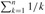

|
|
< Day Day Up > |
|
There are many techniques available for bounding the summations that describe the running times of algorithms. Here are some of the most frequently used methods.
The most basic way to evaluate a series is to use mathematical induction. As an example, let us prove that the arithmetic series evaluates to 1/2n(n + 1). We can easily verify this for n = 1, so we make the inductive assumption that it holds for n and prove that it holds for n + 1. We have
One need not guess the exact value of a summation in order to use mathematical induction. Induction can be used to show a bound as well. As an example, let us prove that the geometric series is O(3n). More specifically, let us prove that for some constant c. For the initial condition n = 0, we have as long as c ≥ 1. Assuming that the bound holds for n, let us prove that it holds for n + 1. We have
as long as (1/3 + 1/c) ≤ 1 or, equivalently, c ≥ 3/2. Thus, , as we wished to show.
We have to be careful when we use asymptotic notation to prove bounds by induction. Consider the following fallacious proof that . Certainly, . Assuming the bound for n, we now prove it for n + 1:
The bug in the argument is that the "constant" hidden by the "big-oh" grows with n and thus is not constant. We have not shown that the same constant works for all n.
Sometimes, a good upper bound on a series can be obtained by bounding each term of the series, and it often suffices to use the largest term to bound the others. For example, a quick upper bound on the arithmetic series (A.1) is
In general, for a series , if we let amax = max1≤k≤nak, then
The technique of bounding each term in a series by the largest term is a weak method when the series can in fact be bounded by a geometric series. Given the series , suppose that ak+1/ak ≤ r for all k ≥ 0, where 0 < r < 1 is a constant. The sum can be bounded by an infinite decreasing geometric series, since ak ≤ a0rk, and thus
We can apply this method to bound the summation . In order to start the summation at k = 0, we rewrite it as  . The first term (a0) is 1/3, and the ratio (r) of consecutive terms is
. The first term (a0) is 1/3, and the ratio (r) of consecutive terms is
for all k ≥ 0. Thus, we have
A common bug in applying this method is to show that the ratio of consecutive terms is less than 1 and then to assume that the summation is bounded by a geometric series. An example is the infinite harmonic series, which diverges since
The ratio of the (k + 1)st and kth terms in this series is k/(k + 1) < 1, but the series is not bounded by a decreasing geometric series. To bound a series by a geometric series, one must show that there is an r < 1, which is a constant, such that the ratio of all pairs of consecutive terms never exceeds r. In the harmonic series, no such r exists because the ratio becomes arbitrarily close to 1.
One way to obtain bounds on a difficult summation is to express the series as the sum of two or more series by partitioning the range of the index and then to bound each of the resulting series. For example, suppose we try to find a lower bound on the arithmetic series , which has already been shown to have an upper bound of n2. We might attempt to bound each term in the summation by the smallest term, but since that term is 1, we get a lower bound of n for the summation - far off from our upper bound of n2.
We can obtain a better lower bound by first splitting the summation. Assume for convenience that n is even. We have
which is an asymptotically tight bound, since .
For a summation arising from the analysis of an algorithm, we can often split the summation and ignore a constant number of the initial terms. Generally, this technique applies when each term ak in a summation is independent of n. Then for any constant k0 > 0, we can write
since the initial terms of the summation are all constant and there are a constant number of them. We can then use other methods to bound . This technique applies to infinite summations as well. For example, to find an asymptotic upper bound on
we observe that the ratio of consecutive terms is
if k ≥ 3. Thus, the summation can be split into
since the first summation has a constant number of terms and the second summation is a decreasing geometric series.
The technique of splitting summations can be used to determine asymptotic bounds in much more difficult situations. For example, we can obtain a bound of O(lg n) on the harmonic series (A.7):
The idea is to split the range 1 to n into ⌊ lg n⌋ pieces and upper-bound the contribution of each piece by 1. Each piece consists of the terms starting at 1/2i and going up to but not including 1/2i+1, giving
| (A.10) |
When a summation can be expressed as  , where f (k) is a monotonically increasing function, we can approximate it by integrals:
, where f (k) is a monotonically increasing function, we can approximate it by integrals:
| (A.11) |
The justification for this approximation is shown in Figure A.1. The summation is represented as the area of the rectangles in the figure, and the integral is the shaded region under the curve. When f(k) is a monotonically decreasing function, we can use a similar method to provide the bounds
The integral approximation (A.12) gives a tight estimate for the nth harmonic number. For a lower bound, we obtain
| (A.13) |
For the upper bound, we derive the inequality
which yields the bound
Why didn't we use the integral approximation (A.12) directly on  to obtain an upper bound on the nth harmonic number?
|
|
< Day Day Up > |
|